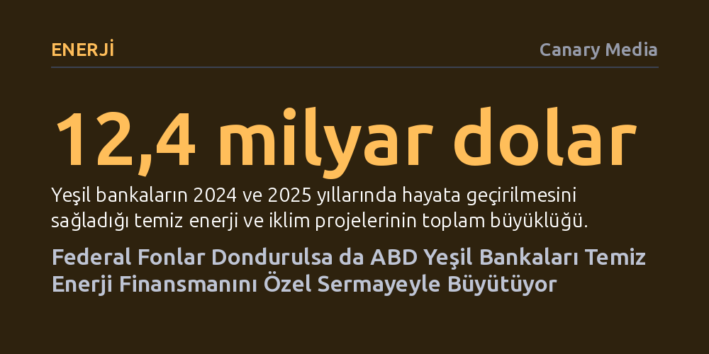

ENERJI · Canary Media · 2026-10-13
ABD'deki yeşil bankalar, Trump yönetiminin federal iklim fonlarını dondurmasına rağmen 2024 ve 2025'te 12,4 milyar dolarlık temiz enerji yatırımını hayata geçirmeyi başardı. Kuruluşlar, kaybolan kamu kaynaklarını özel sermaye ortaklıkları ve risk paylaşım modelleriyle telafi ediyor.
İklim finansmanının yalnızca merkezi hükümet teşviklerine bağımlı olmadığını, yerel kamu-özel ortaklıkları ve yaratıcı kredi mekanizmalarıyla siyasi engellerin aşılabileceğini gösteriyor.

Amerika Birleşik Devletleri'nde temiz enerjiye geçişin finansal omurgasını oluşturan yeşil bankalar, Washington'dan gelen sert siyasi rüzgarlara karşı dikkat çekici bir dayanıklılık sergiliyor. Trump yönetiminin, Joe Biden döneminde Enflasyon Azaltma Yasası kapsamında oluşturulan 20 milyar dolarlık Sera Gazı Azaltma Fonu'nu ve 7 milyar dolarlık "Herkes İçin Güneş" (Solar for All) hibelerini durdurması, sektörü benzeri görülmemiş bir kaynak kesintisiyle yüz yüze bıraktı. Federal yargıçların bu fon dondurma ve iptal kararlarını art arda hukuka aykırı bulmasına karşın, Beyaz Saray'ın temyiz süreçlerini ABD Yüksek Mahkemesi'ne taşıma hazırlığı paranın sahaya akışını fiilen tıkamış durumda.
Buna rağmen 56 üyesi bulunan "U.S. Green Bank 50" koalisyonunun yayımladığı ilk etki raporu, yerel finans kuruluşlarının pes etmediğini ortaya koyuyor. 48 yeşil bankanın verilerine göre, bu kuruluşlar 2024 ve 2025 yılları boyunca yaklaşık 1,4 milyar dolarlık kendi öz sermayelerini ortaya koyarak, ticari bankalar ve hayırsever fonlardan 11 milyar dolarlık özel sermayeyi harekete geçirdi. Toplamda 12,4 milyar dolara ulaşan bu kaynak, geleneksel bankaların kapısından dönen 40 binden fazla temiz enerji ve iklim projesine can suyu sağladı. Koalisyon direktörü Dan Adler bu durumu, “Zorunluluktan bir erdem çıkardık” sözleriyle özetliyor.
Yeşil bankaların varlık sebebi, ticari kredi kuruluşlarının mesafeli durduğu alanlarda piyasa başarısızlıklarını gidermek. Güneş panelleri, ısı pompaları veya yalıtım teknolojileri artık rüştünü ispatlamış, teknik riski düşük çözümler kabul ediliyor. Ancak bu sistemlerin kurulacağı kesimler geleneksel finans dünyasının gözünde yüksek riskli görülüyor. Düşük gelirli aileler, geçmişte bankacılık sisteminden dışlanmış azınlık mahalleleri ve kâr amacı gütmeyen konut kooperatifleri, kredi notları veya anlaşma büyüklükleri nedeniyle büyük ticari bankaların ilgisini çekmiyor.
İşte yeşil bankalar tam bu noktada devreye girerek ilk zarar riskini üstleniyor ve kredi yapısını dönüştürüyor. Kendi kamu ya da bağış temelli sermayelerini bir tampon olarak kullanan bu kurumlar, özel sermaye için güvenli bir yatırım ortamı yaratıyor. Küçük ölçekli projeleri paketleyip bir araya getirerek işlem maliyetlerini düşürüyor, böylece hem müteahhitlerin hem de düşük gelirli mülk sahiplerinin temiz enerji dönüşümüne borçlanarak katılabilmesini mümkün kılıyorlar.
Federal hibe musluklarının kesilmesi, yeşil bankaları finansman modellerinde daha yaratıcı ve dayanışmacı olmaya zorladı. Bunun en somut örneklerinden biri, birden fazla kreditörün bir araya gelerek riski paylaştığı sendikasyon kredileri. Örneğin New Orleans'ta tarihi bir Katolik rahibe cemaatine ait arazide kurulan 10 milyon dolarlık topluluk güneş enerjisi projesi, kâr amacı gütmeyen Inclusive Prosperity Capital ile yerel kalkınma fonlarının güç birliğiyle finanse edildi. Tesis, ürettiği temiz elektrikle dar gelirli 350 hanenin elektrik faturalarını kalıcı olarak düşürecek.
Benzer şekilde, New York Şehri Enerji Verimliliği Kurumu (NYCEEC), Utah'taki yerel bir ortakla el ele vererek Salt Lake City'de 396 konutluk tamamen elektrikli uygun fiyatlı bir konut projesine 4,5 milyon dolarlık geliştirme öncesi kredi sağladı. Geleneksel bankaların ilk kez hayata geçen projelere vermekten kaçındığı bu erken aşama kredi, projenin inşaat safhasına geçebilmesini sağladı. Öte yandan Florida merkezli SELF gibi kurumlar geliştirdikleri dijital kredi değerlendirme platformunu ülke genelindeki 13 kuruluşa açarak, her bir ortağın yüz binlerce dolarlık işletme giderinden tasarruf etmesine ve ölçek ekonomisi yakalamasına öncülük etti.
Yeşil bankaların yerel çabalarla özel sermayeyi seferber etmesi büyük bir başarı olsa da, dondurulan federal kaynakların yarattığı boşluk tamamen kapatılabilmiş değil. Örneğin dondurulan 7 milyar dolarlık hibe paketinin ana yararlanıcılarından Climate United Fund, yerli kabilelerin temiz enerji projelerini ve yerli üretim elektrikli kamyonların finansmanını öngören büyük ölçekli planlarını askıya almak zorunda kaldı. İncelenen 48 bankanın önünde finanse edilmeyi bekleyen 6,8 milyar dolarlık hazır proje hattı bulunuyor, ancak sıfıra yakın faizli kamu hibeleri olmadan bu projelerin bir kısmına hayat vermek imkansızlaşıyor.
Üstelik raporda yer alan yeşil bankaların önemli bir kısmı, yıllık 2 milyon doların altındaki mütevazı işletme bütçeleriyle çalışıyor. Elektrik faturalarının hızla arttığı ve iklim krizinin etkilerinin derinleştiği bir dönemde, bu küçük ekiplerin üstlendiği finansal yük giderek ağırlaşıyor. Hukuki mücadeleler Yüksek Mahkeme'ye doğru ilerlerken, yeşil bankaların geleceği federal bütçelerin kaderi ile yerel sermaye piyasalarında kuracakları yeni ortaklıklar arasındaki dengeye bağlı görünüyor.